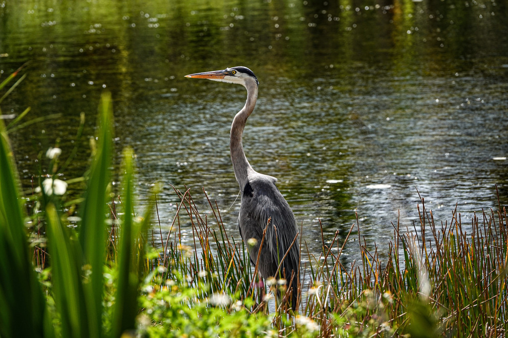

- Standing close to four feet tall with a wingspan that can stretch past six feet, the great blue heron is the largest heron in North America — and one of the most recognizable birds in Florida.
- Its main tool is patience: it stands motionless in the shallows, sometimes for many minutes, then snaps its coiled neck forward faster than the eye can follow.
- It hunts fish in the shallows but is just as happy stalking open fields and grassy banks for frogs, snakes, and rodents, so you may spot one far from any water.
- Travel south toward the Florida Keys and you may meet an all-white version of this same bird — long thought to be its own species, now treated simply as a different color form.
Very large — around four feet tall with a roughly six-foot wingspan.
Blue-gray body, a mostly white face with a black plume stripe over the eye, and a heavy yellowish bill.
Neck folded into an S, long legs trailing behind, slow deep wingbeats.
Entirely white, but with the same size, shape, and heavy bill.
Mostly silent, but when alarmed or flushed it lets out a deep, harsh, far-carrying squawk.
A tall blue-gray bird standing motionless or wading slowly in the shallows. In flight, the folded neck is the giveaway that separates herons from cranes and storks, which fly with necks outstretched.
Mainly fish, but a true generalist — also frogs, snakes, turtles, large insects, and small mammals like rats and gophers, taken on land as well as in water.
Along the pond banks and shallows, standing still or wading slowly. Sometimes seen well away from water, stalking the lawns for prey.
Year-round resident. Visible throughout the day, usually hunting alone.
Keep your distance and do not feed it. A hunting heron needs quiet and space; getting too close sends it flying off hungry.


- © Rob Carr (CC-BY-NC), via iNaturalist
- © Christine Leamon (CC-BY-NC), via iNaturalist
- © Rhonda Olschefskie (CC-BY-NC), via iNaturalist
- © Lilah Thomas (CC-BY-NC), via iNaturalist